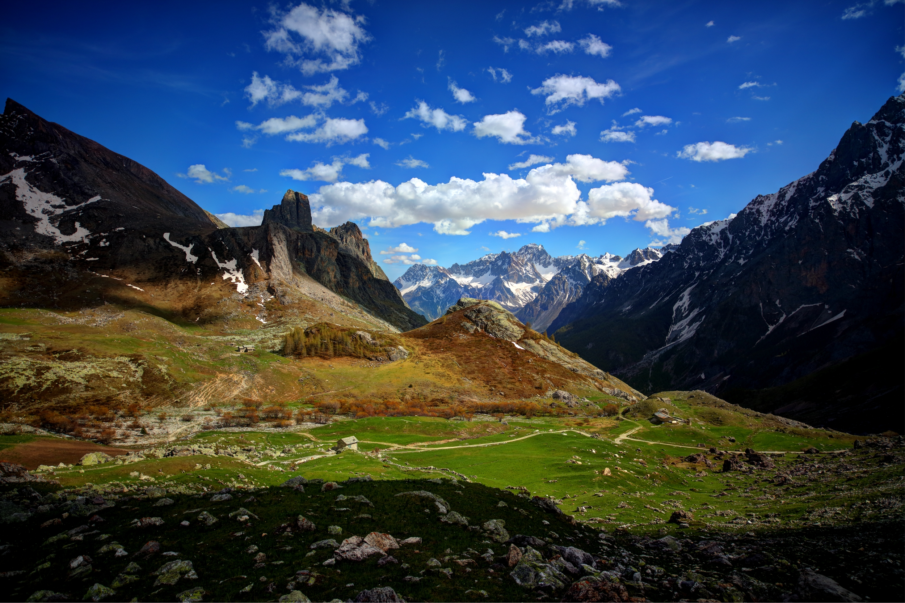

La Valle Maira è una valle alpina situata nella parte sud-occidentale del Piemonte, in provincia di Cuneo. È attraversata dal torrente Maira e comprende numerosi piccoli borghi di montagna ricchi di storia e tradizioni.
A differenza di altre località alpine più turistiche, la Valle Maira ha conservato un ambiente naturale incontaminato, antiche architetture in pietra e una forte identità culturale legata alla tradizione occitana.
La Valle Maira è conosciuta come una delle valli più autentiche d'Italia perché il turismo di massa è quasi assente.
In alcuni paesi viene ancora parlata la lingua occitana, riconosciuta come minoranza linguistica storica.